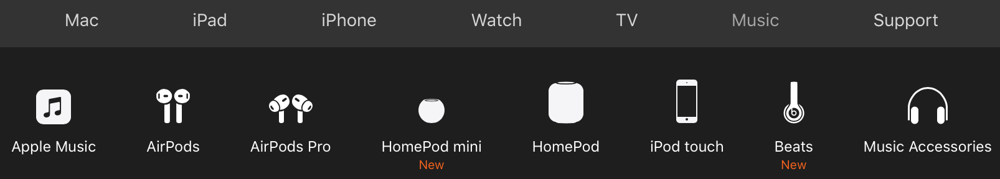
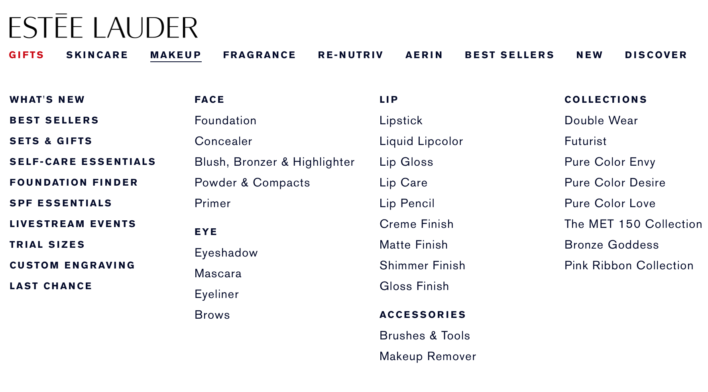

Практические советы по дизайну удобной навигации на сайте
Содержание статьи:
- Спроектируйте навигацию, которая соответствует ментальным моделям пользователей
- Проектируйте для удобства
- Предоставьте пользователям контроль
- Проектируйте для быстрого сканирования
- Минимизируйте когнитивную нагрузку на посетителя
Навигация – один из наиболее важных аспектов дизайна продукта. Люди полагаются на навигацию, чтобы найти контент и функции. Удобная навигация должна быть главным приоритетом для любого приложения или сайта. В конце концов, сколько бы времени вы ни тратили на создание хорошего контента и функций, вся эта работа будет бесполезной, если посетитель не сможет их найти.
-
Спроектируйте навигацию, которая соответствует ментальным моделям пользователей
- Выясните, как люди перемещаются по вашему сайту. Используйте веб-аналитику, чтобы узнать, что посетители ищут на вашем сайте. Изучите сеансы пользователей, чтобы найти ключевые юзерфлоу и понять, какие задачи посетители выполняют на вашем веб-сайте.
- Создавайте последовательную навигацию. Непоследовательность порождает путаницу. Не перемещайте элементы навигации верхнего уровня в новое место на других страницах и не изменяйте параметры навигации.
- Оцените категории своего контента. Проведите сортировку карточек, чтобы убедиться, что определенные вами категории контента подходят вашим посетителям.
- Проверьте меню с помощью пользователей. Может быть сложно объективно оценить свою работу. Помните, вы не ваш пользователь. Проведите сеансы юзабилити-тестирования, чтобы увидеть, с какими проблемами люди сталкиваются при навигации по вашему сайту.
-
Проектируйте для удобства
- Не скрывайте меню. Если вы скроете его под кнопкой гамбургер-меню, то люди должны додуматься заглянуть под эту кнопку, чтобы открыть меню. Это отрицательно сказывается на возможности обнаружения. Для небольших экранов, таких как мобильные, также лучше избегать гамбургер-меню и использовать паттерн priority+, чтобы отображать параметры навигации в зависимости от уровня их приоритета.
- Убедитесь, что меню имеет достаточный визуальный вес. Визуальный стиль вашего меню должен отличать его от остального дизайна страницы. Используйте для параметров навигации пробелы и цветовой контраст, чтобы отделить меню от остальной части страницы.
- Используйте иконки, чтобы передать смысл. Правильно выбранные иконки могут помочь пользователям понять параметры меню, не читая текстовых меток. Однако не заменяйте метки значками. Когда иконки используются для навигации сами по себе, без сопроводительного текста, посетителям может быть сложно расшифровать их значение. 
- Разместите меню в знакомых местах. Помните, что люди проводят большую часть своего времени на других сайтах. И они ожидают, что ваш сайт будет работать так же, как и другие. Таким образом, разместите меню в тех областях, где пользователи ожидают его найти: вверху страницы, на левой боковой панели и в футере.
-
Предоставьте пользователям контроль
- Используйте четкие метки. Дизайн навигации по сайту должен быть предсказуемым. Посетитель должен уметь предугадывать значение каждого параметра навигации, прежде чем взаимодействовать с ним. Именно по этой причине лучше избегать использования жаргона для меток. Используйте простые термины во всех областях сайта, включая метки меню.
- Покажите, что ссылки меню интерактивны. Посетители могут даже не осознавать, что это меню, если его пункты не выглядят интерактивными. Предлагайте хорошие визуальные обозначения, например, контрастные цвета, чтобы дать посетителям четкое представление о том, что кликабельно, а что статично.
- Создавайте параметры навигации правильного размера. Слишком маленькие или расположенные слишком близко друг к другу параметры навигации могут привести к неправильным действиям. Сенсорная мишень с физическим размером около 9 мм подходит для большинства групп пользователей.
- Сообщайте посетителям о текущем местоположении. Помогите посетителям определить, где они находятся в иерархии вашего сайта. Выделите текущий выбранный параметр в меню и убедитесь, что заголовки страниц описывают тему или цель.
- Предложите навигационные цепочки (breadcrumbs). Навигационные цепочки помогают сориентировать людей на веб-сайте, и они полезны для сложных сайтов (имеющих иерархию с несколькими уровнями).
- Используйте липкие меню для страниц с длинной прокруткой. В обычном меню посетители, которые достигли нижней части длинной страницы, должны прокручивать ее вверх для доступа к параметрам навигации. С другой стороны, липкие меню все время остаются видимыми вверху области просмотра, что снижает стоимость взаимодействия.
-
Проектируйте для быстрого сканирования
- Стремитесь к меткам, состоящим из 2 слов. Каждый пункт меню должен начинаться с одного или двух слов, несущих информацию. Почему? Потому что посетители обычно видят около двух слов для большинства элементов списка при его просмотре.
- Избегайте использования одних и тех же слов для начала названий элементов списка. Потому что это затруднит сканирование.
- Используйте элементы навигации с выравниванием по левому краю. Люди в западных странах читают слева направо (F-образный паттерн). Используя элементы навигации, выровненные по левому краю, вы улучшаете возможности сканирования.
- Будьте осторожны с использованием текста, написанного ЗАГЛАВНЫМИ буквами. ЭТО ПРЕДЛОЖЕНИЕ НАПИСАНО ЗАГЛАВНЫМИ БУКВАМИ. Вы видите, что читабельность такого текста ухудшается, потому что все слова имеют однородную прямоугольную форму. Текст, написанный только ЗАГЛАВНЫМИ буквами может работать для пунктов меню из одного или двух слов, но лучше избегать этого, когда большинство пунктов меню состоят из 3+ слов.
- Ограничьте количество вариантов навигации верхнего уровня. Когнитивный психолог Джордж Миллер обнаружил, что количество объектов, которые в среднем человек может удерживать в кратковременной памяти, составляет 7 ± 2. Придерживайтесь этого числа при создании меню. Вы можете предоставить ограниченное количество элементов навигации верхнего уровня и предложить подменю для каждого элемента, если проектируете сложный веб-сайт.
- Обратите внимание на порядок параметров навигации. Имеет значение не только количество элементов, но и их порядок. Эффект последовательной позиции – это тенденция человека лучше всего вспоминать первый и последний элементы в серии. В соответствии с этим эффектом элементы в начале и в конце наиболее эффективны, потому что мозг запоминает их намного легче, чем средние элементы. По этой причине параметры, которые мы помещаем в начало или конец навигации, становятся более заметными. Например, если вы разрабатываете целевую промо-страницу для продукта, вы можете сначала отобразить ссылку на страницу сведений о продукте, а «Связаться с нами» или «Купить» в качестве последнего пункта навигации.
- Используйте мегаменю, чтобы пользователи могли предварительно просмотреть параметры навигации нижнего уровня. Мегаменю – это большие раскрывающиеся меню, которые содержат несколько уровней ссылок одновременно. Они могут сэкономить время посетителей, позволив им пропустить несколько уровней. 
-
Минимизируйте когнитивную нагрузку на посетителя
- Стремитесь к плоской навигации. Плоская навигация – это система навигации, в которой посетитель может получить доступ к самой глубокой вложенной странице сайта за один-два клика. Постарайтесь ограничить количество уровней, не внося путаницы.
- Избегайте необычных анимационных эффектов. Навигация – не лучшее место для экспериментов с анимацией. Безопаснее не добавлять в меню чисто декоративные эффекты, поскольку они могут отвлекать посетителей.